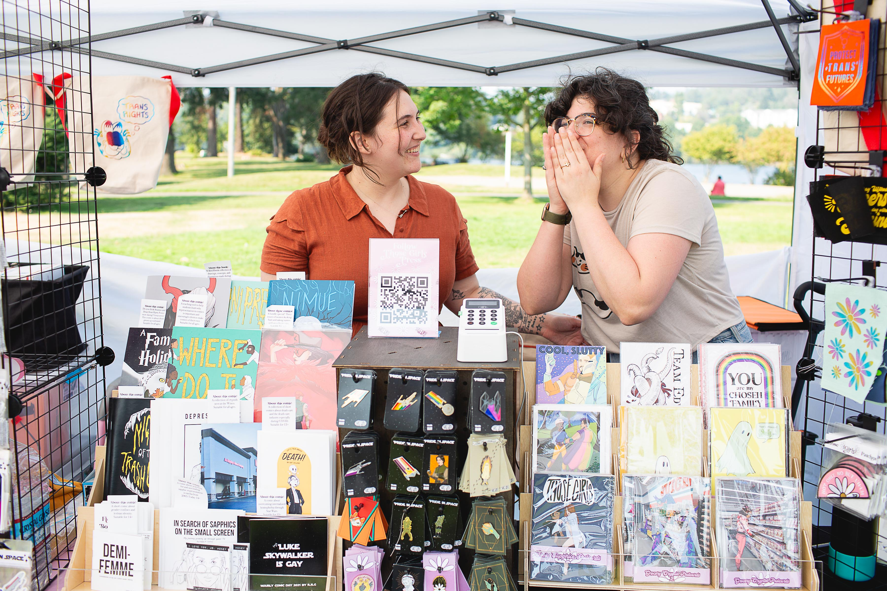
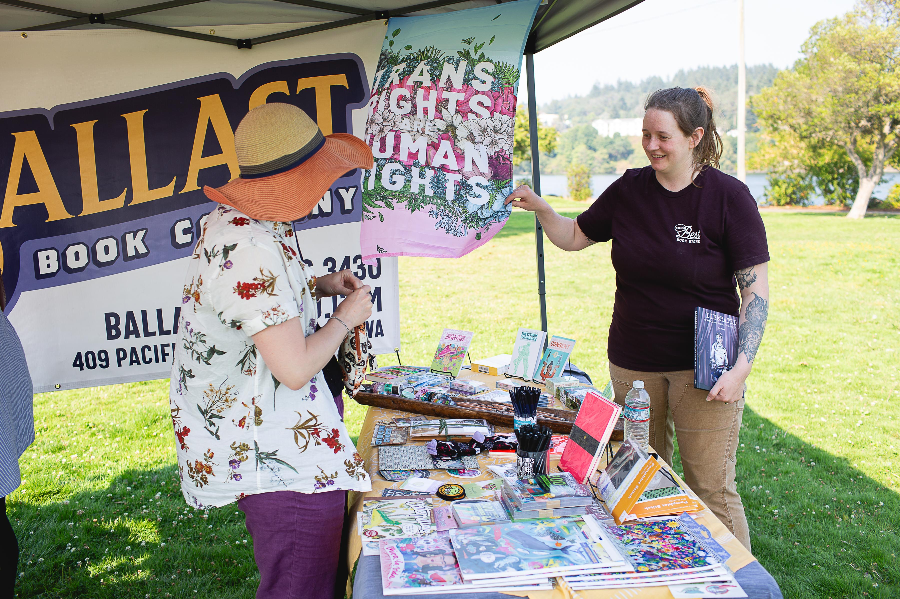

⚠️Zine sales by non-tabling artists is prohibited.⚠️ While we love trading zines, it’s important to protect our table artists.
As a non-tabling artist, you are welcome to bring zines for free or to trade, but you may not sell them.
Essential Checklist for First-Time Zine Table Exhibitors
Bremerton Zine Fest reserves the right to assign tablespace to exhibitors as space at the venue allows.
Preparing for your first zine fest as an exhibitor can be exciting and a bit overwhelming. Here's a basic list to help you get ready and make the most of your experience:
Pre-Event Preparation

Those Girls Press,thosegirlspress.com
Zines and Merchandise
- Stock Up: Bring enough copies of each zine you plan to sell. Consider the expected attendance to gauge the quantity.
- Variety: If possible, have a mix of different zines or related merchandise (stickers, buttons, prints) to attract a wider audience. Always check for tabling requirements (ex. 75% of your table should be zine or zine related content)
Table Display
- Tablecloth: Bring a tablecloth to give your table a cohesive look and protect your merchandise.
- Display Stands: Use stands or racks to display your zines vertically for better visibility.
- Signage: Create clear signs with your zine's name, prices, and any special offers. A banner can also help attract attention.
- None of these items are essential, but you should have a sign with information about how people can give you money.
Sales Essentials
- Cash Box: Have a cash box with plenty of change. Small bills and coins are a must.
- Card Reader: Offer a card payment option using a mobile card reader like Square, PayPal, Venmo or Cash App.
- Price List: Make a visible price list for all your items or have each item labeled.
Marketing Materials (OPTIONAL)
- Business Cards: Hand out business cards with your contact information and social media handles.
- Mailing List Signup: Provide a sign-up sheet for attendees who want to join your mailing list.
- Promotional Materials: Flyers or postcards with information about your zine and upcoming projects.
Day of the Event
- Arrive Early: Get to the venue early to set up your table without rushing.
- Layout: Arrange your table in an inviting way, with your best or newest zines prominently displayed.
- Follow ALL Safer Space policies or venue policies.
Personal Essentials
- Comfortable Clothing: Wear comfortable clothing and shoes since you’ll be on your feet a lot.
- Snacks and Water: Bring snacks and water to stay energized throughout the day.
- Hand Sanitizer: Keep hand sanitizer handy for yourself and to offer to customers.
Engagement Tools
- Conversation Starters: Be prepared with a few talking points about your zines to engage visitors.
- Demo Copies: Have copies available for people to browse. These can be marked “Sample” to avoid confusion.
Post-Event

Ballast Books Company, ballastbookco.com
- Follow-Up
- Thank You Notes: Send thank you notes or emails to people who signed up for your mailing list.
- Social Media: Post a recap of the event on your social media channels, thanking attendees and sharing photos.
- Inventory Check
- Count Remaining Stock: Take note of how much stock you have left to plan for future events.
- Sales Analysis: Analyze what sold well and what didn’t to inform your strategy for future events.
- Self-Care
- Rest: Make sure to rest and recover after the event. Exhibiting can be physically and mentally exhausting.
- Reflection: Reflect on what went well and what could be improved for your next zine fest.